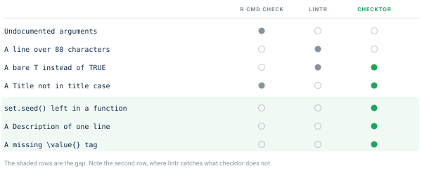
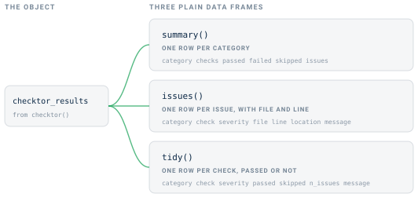

install.packages("checktor")Close the gap
R CMD check tells you whether your package builds, installs and runs. CRAN volunteers also read each new package by hand, and they ask for more. They object to a help page with no \value{}, a set.seed() buried inside a function and a Description one line long. R CMD check passes all three without a word, and any one of them can send a package back.


checktor holds your package to the rules reviewers apply by hand. They come from the CRAN Repository Policy, Writing R Extensions and the CRAN Cookbook, the R Contributor guide to the problems that get packages sent back. Use it alongside R CMD check, which remains the authority on whether a package builds and runs, and lintr, which is the place for code style.
Install checktor
Install the release from CRAN.
The development version carries changes that have not reached CRAN yet. Install it from GitHub.
# install.packages("pak")
pak::pak("coatless-rpkg/checktor")Run a first checkup
Load the package.
checktor() examines a package directory. Rather than experiment on your own package, start with a throwaway one. example_diagnose_scenario() builds a small package around one file of bad habits and returns its path.
pkg <- example_diagnose_scenario("code_examples/tf_usage_bad.R",
show_content = FALSE)The file uses T and F where it means TRUE and FALSE.
# Example file showing T/F usage issues
#' Process Data Function
#' @param data A data frame
#' @return Logical indicating success
process_data <- function(data) {
if (is.null(data)) {
return(F) # Issue: should be FALSE
}
has_complete_cases <- T # Issue: should be TRUE
if (has_complete_cases) {
cleaned_data <- data[complete.cases(data), ]
return(T) # Issue: should be TRUE
}
return(F) # Issue: should be FALSE
}
# Another function with T/F issues
validate_input <- function(x, strict = T) {
# Issue: should be TRUE
if (length(x) == 0) {
return(F)
} # Issue: should be FALSE
valid <- all(is.numeric(x))
return(valid && strict == T) # Issue: should be TRUE
}
example_diagnose_scenario()prints the file itself unless you passshow_content = FALSE. This page passesFALSEand shows the file above as highlighted R instead of console output.
Now the checkup itself.
# verbose and progress are off here, which keeps the printout compact
results <- checktor(pkg, verbose = FALSE, progress = FALSE)
results
#> ── Package Doctor - Diagnosis Summary ──────────────────────────────────────────
#> Patient: examplepackage
#> Examined: 2026-10-15 21:53:02.660595
#> Doctor version: 0.2.0.9000
#>
#> CODE ISSUES: 1 failing check
#> DESCRIPTION ISSUES: HEALTHY
#> DOCUMENTATION ISSUES: HEALTHY
#> GENERAL ISSUES: HEALTHY
#> POLICY ISSUES: HEALTHY
#>
#> ℹ 2 checks did not run: "spelling" and "url_liveness".
#> ! Overall health: NEEDS ATTENTION (7 issues)
#> Run `summary()`, `issues()`, or `prescribe()` for detailsThe printout marks each of the five categories (code, DESCRIPTION, documentation, general and CRAN policy) as healthy or failing. It lists any check that did not run and ends with the package’s overall health. Here the code category fails on seven uses of T and F. url_liveness did not run, because it fetches URLs only when you are at the console.
Each check has one of three severities. policy marks a rule CRAN applies, robustness a defect CRAN would still accept, and opinion a convention. By default, overall health counts policy and robustness findings and leaves opinion findings out of the count.
Where the Checks Come From gives the source and severity of every check, and the function reference documents each one.
On your own package, call
checktor()with no arguments. It finds the package root from anywhere inside it, so a working directory ofR/ortests/testthat/still examines the whole package.
Read the results as data
The printed report is for people. To filter, count or reshape the findings, use the accessors, which return plain data frames.


summary(results) # one row per category
#> category checks passed failed skipped issues
#> 1 code 16 15 1 0 7
#> 2 description 23 22 0 1 0
#> 3 documentation 17 17 0 0 0
#> 4 general 7 6 0 1 0
#> 5 policy 4 4 0 0 0
issues(results) # one row per issue, with file and line
#> category check severity file line location
#> 1 code tf_usage robustness tf_usage_bad.R 8 tf_usage_bad.R:8
#> 2 code tf_usage robustness tf_usage_bad.R 11 tf_usage_bad.R:11
#> 3 code tf_usage robustness tf_usage_bad.R 15 tf_usage_bad.R:15
#> 4 code tf_usage robustness tf_usage_bad.R 18 tf_usage_bad.R:18
#> 5 code tf_usage robustness tf_usage_bad.R 22 tf_usage_bad.R:22
#> 6 code tf_usage robustness tf_usage_bad.R 25 tf_usage_bad.R:25
#> 7 code tf_usage robustness tf_usage_bad.R 29 tf_usage_bad.R:29
#> message
#> 1 T/F usage check
#> 2 T/F usage check
#> 3 T/F usage check
#> 4 T/F usage check
#> 5 T/F usage check
#> 6 T/F usage check
#> 7 T/F usage checktidy(results) gives one row per check, passed or not, and as.data.frame() returns the same frame. Its skipped column marks a check that did not run, such as the URL fetch above, so a check that sat out never reads as a pass. summary() counts that check as skipped, and its passed, failed and skipped columns add up to checks.
Three helpers answer the usual questions.
is_healthy(results)
#> [1] FALSE
n_issues(results)
#> [1] 7
failed_checks(results)
#> [1] "code.tf_usage"is_healthy() and n_issues() follow the overall health, so by default they count only policy and robustness findings. issues() lists findings of every severity, opinion included, and failed_checks() lists every check that failed. Every accessor also works on a single category, as in issues(results$code_issues). issues(), n_issues(), is_healthy() and passed() work on a single check as well.
Gate a script on one call
checkup() runs the same diagnosis without printing and returns one logical, TRUE when the package is in good overall health.
checkup(pkg)
#> [1] FALSEIt is built to end a shell one-liner. checktor in Continuous Integration puts it in charge of a GitHub Actions build.
Treat what it finds
Diagnosis without treatment is only bad news. prescribe() takes each failed check in turn and prints its findings, its remedy and a before-and-after example.
prescribe(results)
#> ── Treatment Recommendations ───────────────────────────────────────────────────
#>
#> ── T/F Usage Issues
#> Issues found:
#> • tf_usage_bad.R:8
#> • tf_usage_bad.R:11
#> • tf_usage_bad.R:15
#> • tf_usage_bad.R:18
#> • tf_usage_bad.R:22
#> ... and 2 more
#> Treatment: Replace `T` with `TRUE` and `F` with `FALSE`
#> # Before
#> result <- T
#> # After
#> result <- TRUE
#> health_report() writes the same findings and remedies to a file, as Markdown, HTML or plain text, to keep beside your cran-comments.md.
health_report(results, file = "package-health.md")
health_report(results, file = "package-health.html", format = "html")Examine one category at a time
Each category also runs on its own. That helps when you are fixing one thing and would rather not hear about the rest.
diagnose_code_issues() # just the R sources
diagnose_description_issues() # just DESCRIPTION
diagnose_documentation_issues() # help pages, examples, vignettes, demos
diagnose_general_issues() # size, URLs, NEWS, README links
diagnose_policy_violations() # CRAN policyTo run one check, call its lab_*() function, such as lab_tf_usage().
Check only what CRAN receives
R CMD build leaves out whatever .Rbuildignore matches, and checktor leaves out the same files. Help pages and vignettes that never reach the tarball are never checked.
The devtag package uses this to document unexported functions. Its @dev tag writes the help page and adds the .Rd file to .Rbuildignore, so contributors see the page and users do not. Examples on those pages can call ::: without an objection from checktor. The pkgdown-only articles that usethis::use_article() writes to vignettes/articles/ are left out the same way.
roxygen_usage is the exception. It reads all of man/, because it asks whether your working tree matches roxygen, which is a question about your files rather than the tarball.
Turn down the volume
checktor() is chatty by design. In a script, quiet it once and every later call inherits the setting.
configure_doctor(verbose_default = FALSE, progress_default = FALSE)
# or per call
results <- checktor(verbose = FALSE, progress = FALSE)Ask for a check, or turn one off
Some checks never join a run. Either no authority backs them, or they concern your submission workflow rather than the package. Nothing tried to run them, so they are not reported as skipped, and a quiet run does not mention them. The results list them.
results$metadata$on_request_checks
#> [1] "cph_role" "cran_comments_file"
#> [3] "description_function_quotes" "format_names"
#> [5] "title_starts_with_article"Each is a lab_*() function like any other check, so running one takes one call.
lab_cran_comments_file(pkg, verbose = FALSE)
#> ✔ cran-comments file check: PASSEDIn the other direction, you can turn off a check you have decided against. For one package, list it in that package’s DESCRIPTION.
Config/checktor/disable: news_fileThe same DESCRIPTION can mute a finding you have reviewed with Config/checktor/allow, and add words to a check’s list with fields such as Config/checktor/software_names. These settings travel with the package, so they apply wherever it is checked.
For every package, set the option once, for example in .Rprofile.
options(checktor.disable = "news_file")Disabled checks do not run and are not counted anywhere. That sets them apart from skipped checks, which were meant to run and could not.
Fit it into your workflow
Run checktor between writing code and running R CMD check.
devtools::check() runs R CMD check through the rcmdcheck package, which also returns the NOTEs, WARNINGs and ERRORs as data you can inspect. checktor’s checkup covers only the rules it knows, so whether the package is worth submitting remains your call.
See also
- Where the Checks Come From: the source and severity behind every check, from CRAN policy to convention.
-
What R CMD check Checks: each step
R CMD checktakes, and where checktor picks up. -
checktor in Continuous Integration:
checkup()as the gate on a GitHub Actions build. - Writing Your Own Checks: add project-specific checks against the parsed syntax tree.
- Function reference: every function and check in the package.